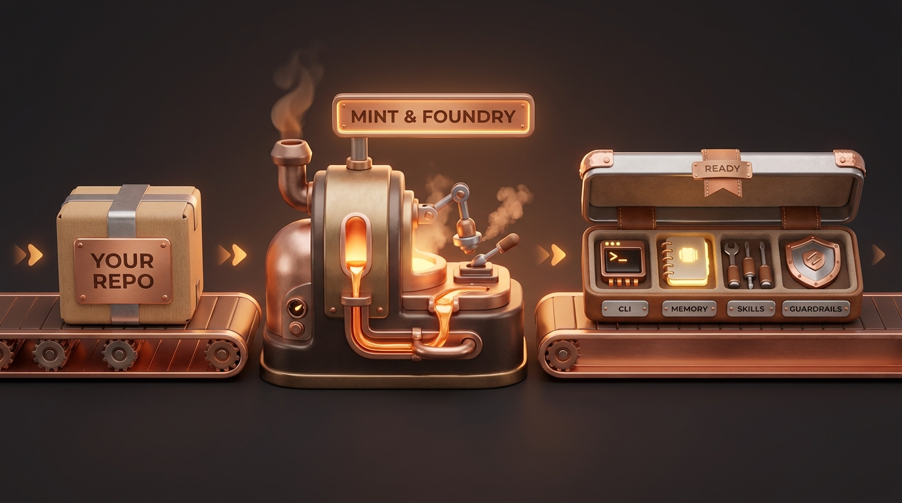
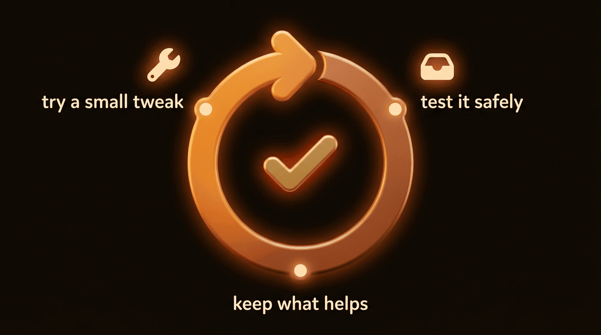
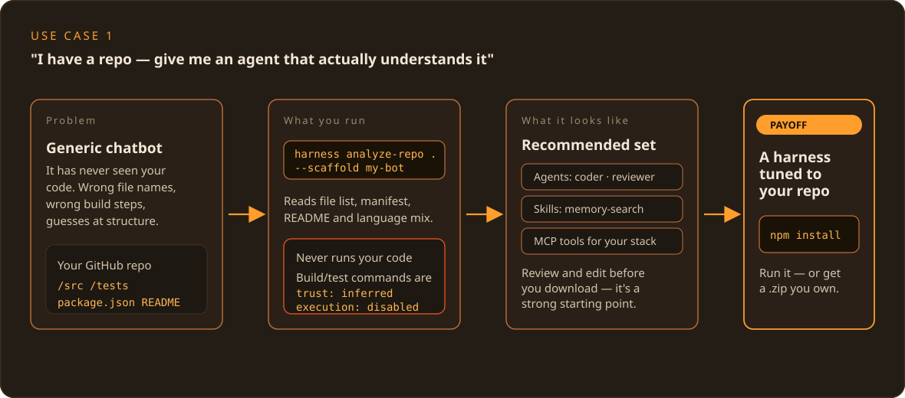
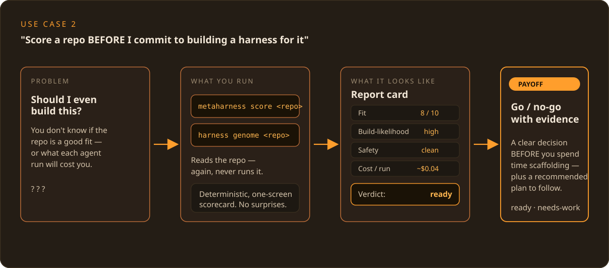
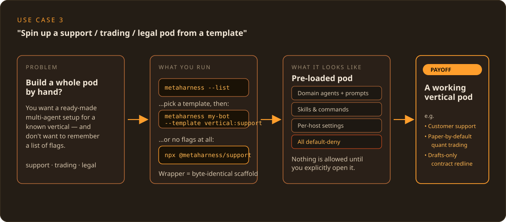
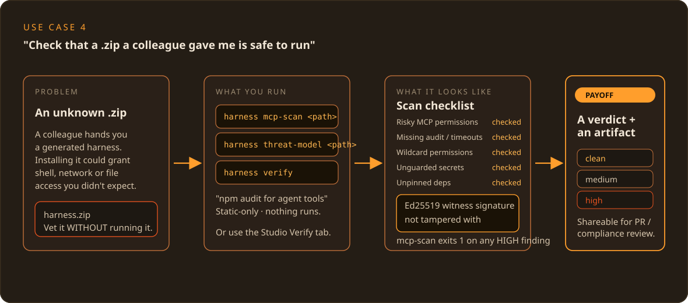
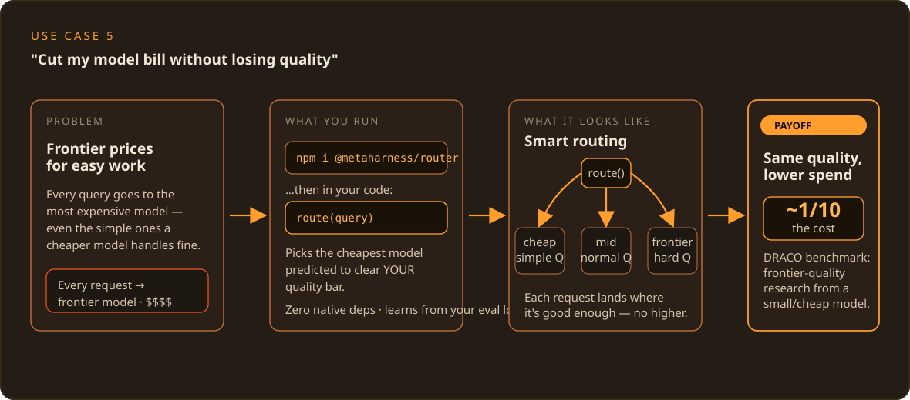
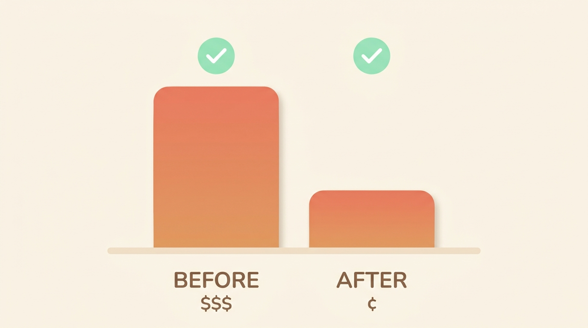
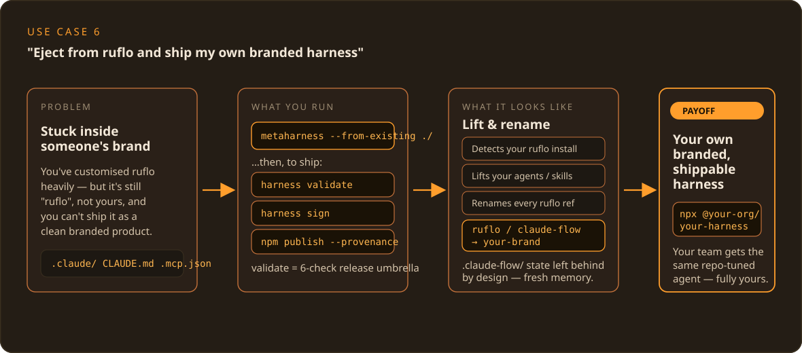

ruvnet · agent-harness-generator
The harness is
the product.
MetaHarness is a free tool that turns any GitHub repo — or a blank
page — into your own AI assistant: its own name, its own
npx your-name command, the skills it needs, a memory of your
project, and a built-in safety net. It runs on your machine. It never
runs your code. The AI model underneath stays the same — what you
build and own is the wrapper around it.
01
Why it was built
Arc 1 — what pushed someone to make this?
First, the short version of what it is, so the rest makes sense. A harness is the wrapper around an AI model — not the model itself. Underneath you are still talking to Claude, GPT, or whatever model you use. The harness is the bit that gives your assistant a name, knows your project, carries a set of skills, and keeps a safety net around what it is allowed to do. MetaHarness is a factory that builds those wrappers. As the project puts it: “It is not another agent framework. It is a factory for agent frameworks. The model is replaceable. The harness is the product.”
So why build a factory instead of just one more assistant? Because of a trap the makers hit themselves. Their earlier product, ruflo, came as one big bundle — a small core engine welded to 60+ pre-made agents, 30+ skills, and 33 plugins, all fused together. People loved the engine but wanted their own brand, their own agents, and their own listing. The only way to get that was to copy (“fork”) the whole bundle — and the moment you did, you were cut off from every future update to the engine. That is a one-way door: rebrand once, and you are frozen in time.
MetaHarness was built to take the hinges off that door. It separates the reusable engine from the opinionated content, so you can take just the engine and generate just the pieces you actually want — owned and branded by you, and still able to pull future engine updates.
02
What problem it solves
Arc 2 — what pain does this take away?
There are three everyday headaches it removes:
- Lock-in. As above — copying a bundled product just to rebrand it means you give up every future update to the part you actually relied on. You get stuck.
- Too many places to run an assistant. Claude Code used to be the obvious home for AI agents. Now there are several — Codex, Hermes, pi.dev and more — and each one wants its config files set up its way. (Config = the small settings files that tell a tool how to behave.) Setting the same assistant up by hand for each place is tedious and easy to get wrong. MetaHarness writes the right files for whichever places you pick.
- Rebuilding the same plumbing every time. Roughly 80% of any new agent project is the same unglamorous wiring done over again: a local tool server, a place to keep memory, the rules for what is allowed, and a way to sign your release so people can trust it. MetaHarness generates all of that for you, correctly, in one go.
In plain terms: instead of spending your first week rebuilding scaffolding, you answer a few questions and get a clean, safe starting point that is already yours.
03
Why now
Arc 3 — why does this make sense at this moment?

A factory only pays off once there is enough variety for it to produce. Two things just crossed that line.
The homes for AI agents multiplied. A year or two ago you mostly ran assistants in one place. Now Codex, Hermes, pi.dev and others each have their own way of running agents. A factory that can target any of them — without you rewriting anything — is suddenly worth having.
The plugin marketplace woke up. A “plugin” is just an add-on capability you can drop into your assistant. There is now a shared, open registry of these (hosted on IPFS, a decentralised file network), so a harness you build can both pull in ready-made plugins and, if you want, publish its own. Building becomes assembling from parts rather than carving everything from scratch — which is exactly when an assembly line earns its keep.
04
How it solves it
Arc 4 — how does it actually do the job?
It walks you through a short series of choices — call it the composer — and then assembles a complete, self-contained package from your answers. You can answer the questions in a friendly picker (a “wizard”) or, if you prefer, pass the same answers as command-line options. Either way you end up at the same place. The steps, in order, are:
- Identity — the name, the package scope, a description, a licence, and who the author is.
- Hosts — tick which places you want it to run (Claude Code, Codex, and so on). Pick at least one.
- Primitives — switch the engine’s building blocks on or off: the tool server (always on), automations, memory, smart routing, the marketplace hook, and signed provenance. All on by default.
- Agents — choose helpers from a curated list (it suggests a coder, a reviewer, and a tester to start).
- Skills — reusable abilities you can bolt on.
- Plugins — optional add-ons from the shared registry (none by default).
- Features — opt-in extras like teamwork between agents or self-improvement.
- Branding — “powered-by” mode or fully independent, plus your brand wording.
- Confirm — a clear summary: every file it will create, the exact engine version it pins to, and a size estimate, before anything is written.
Two things make this safe and predictable. It never runs your code — when it looks at a repo it only reads the file list and a few text files to make suggestions; it does not execute anything. And the generated tool server starts locked down (“default-deny”): no internet access, no shell, no writing to files, until you explicitly allow each one. Nothing is on that you did not turn on.
A note so the numbers add up: the teaching walkthrough on this page uses seven questions (the 7 stages of understanding, sections 01–07). The tool’s own composer has the nine build steps listed just above. They are different lists for different jobs — don’t worry if the counts differ.
05
What “solved” looks like
Arc 5 — how do you know it worked?

When it has done its job, you have a single, self-contained package
— say you called it my-bot — that includes:
- Its own
npx my-botcommand, branded as yours, not as someone else’s tool. - Its own local tool server, locked down by default.
- Its own private memory space, kept separate from everything else.
- The agents, skills, plugins, and per-place config files you chose.
- A signed receipt of exactly what is inside it (a cryptographic signature called an Ed25519 witness manifest), so anyone who installs it can confirm they got precisely what you shipped — nothing swapped or added.
You can publish it (npm publish) and your users run
npx my-bot init. They never see the factory underneath
— only your brand.
And it does not have to stand still. A finished harness can be set to quietly improve its own settings over time: it tries a small tweak, tests it safely in a sandbox, and keeps the change only if it measurably helped. The AI model never changes — only the wrapper gets a little better. (More on this in the use cases below.)
Honest maturity note: this is v0.1.x beta — published and usable, but still settling. The README badge shows 568 tests passing; you may see slightly different totals in other docs as they catch up, so treat 568 as “the headline figure,” not gospel.
06
How to implement it
Arc 6 — what does the path from idea to package look like?
There are two ways in, and they give the same result — a
.zip (or scaffolded folder) that is yours to keep.
1. In your browser, with nothing to install. Open the Studio at ruvnet.github.io/agent-harness-generator, pick a tab (turn a repo into a harness, create one from scratch, add a skill or agent, or verify a harness), make your choices, and click Download .zip. Then on your own machine:
unzip my-bot.zip
cd my-bot
npm installThe Studio runs entirely in your browser. For analysis it only reads a repo’s public file list through GitHub’s API — it never reads your file contents on a server, and there is no account, no sign-in, and no tracking.
2. In your terminal, if you live there. The same behaviour, from the command line:
npx metaharness my-bot --template vertical:coding --host claude-code
# or be asked the questions instead:
npx metaharness --wizard
After scaffolding, the files are yours: open them, delete what you
don’t need, adjust the wording and the routing, and when
you’re happy, ship it with npm publish --provenance
(the --provenance part attaches that signed receipt so
installers can trust it).
One naming note so nothing trips you up: the published command is
npx metaharness. In some older docs you may see
npx create-agent-harness — that is the
same tool under its internal package name, not a second
product. Lead with metaharness.
07
How to start
Arc 7 — what is the single fastest first step?
The fastest way to try MetaHarness is the Browser Studio:
open a page, make your picks, download a .zip. Nothing to
install, no terminal required.
Then unzip my-bot.zip && cd my-bot && npm install
on your machine — that’s it.
Prefer the terminal? If you’re not sure what to
pick, run the wizard. It asks just four things —
a name, a template, where it will run, and a one-line description —
and then prints the exact npx metaharness … command it would
have run, so you can skip the questions next time:
npx metaharness --wizardAlready know what you want? Jump straight in:
npx metaharness my-bot --template vertical:coding --host claude-code
cd my-bot && npm install && npx . --help
Want to see what’s on the menu first? npx metaharness
--list shows every template. And once your harness exists, run
harness doctor — a quick health check that confirms
the scaffold is set up correctly before you go further.
That’s the whole on-ramp: browser Studio or one terminal command, four questions, a working package. The use cases below show where to take it next.
08
Use-case gallery
Six real situations — the situation → the exact command → what it does → what you get.







Every command below is taken straight from the project’s own docs — nothing here is made up. Pick the one that sounds like you.
“I have a repo and want an assistant that actually understands it”
- The situation
- You maintain a codebase and want a coding helper tuned to that project — not a generic chatbot that knows nothing about your file layout.
- The exact command
-
Or, in the browser: the Studio’s Repo → Harness tab — paste the GitHub URL, review the suggestions, click Download .zip.harness analyze-repo . # just look, suggest nothing risky harness analyze-repo . --scaffold my-bot # build the suggested harness - What it does
- Reads your file list, your
package.json, your README, and your mix of languages, then recommends a fitting set of agents, skills, and tools. It never runs your code; any build or test commands it spots are written down but switched off (markedexecution: disabled). - What you get
- A ready-to-use harness (or a
.zip) with a sensible starting agent set for your repo —npm installand you’re running.
“Is this repo even worth building an assistant for — and what will it cost?”
- The situation
- Before you commit any time, you want a quick read on whether a repo is a good candidate, and roughly what each run will cost.
- The exact command
-
npx metaharness score <repo> # a one-screen report card harness genome <repo> # a fuller pre-build readiness report - What it does
- Reads the repo (again, never runs it) and
prints a single screen: how well a harness fits, how likely it is
to build cleanly, how safe the tools look, and the rough cost per
run.
genomeadds a plain verdict — ready, needs-work, or blocked. - What you get
- A clear go / no-go decision, backed by evidence, before you build anything — plus a suggested plan.
“Give me a ready-made team for my industry — support, trading, legal…”
- The situation
- You want a pre-built set of agents for a known area and you’d rather not memorise any options.
- The exact command
-
npx metaharness --list # browse every template npx metaharness my-bot --template vertical:support npx @metaharness/support my-bot # same thing, zero options to remember - What it does
- Builds a harness pre-loaded with that area’s purpose-built agents (with their instructions written in), plus the matching skills, commands, and per-place settings — all locked down by default. The shortcut wrapper produces a byte-for-byte identical result to the longer command.
- What you get
- A working domain team — for example a customer-support pod, a quant-trading setup that is paper-only until you say otherwise, or a contract reviewer that only ever drafts, never sends.
“A colleague sent me a harness — is it safe to run?”
- The situation
- Someone hands you a generated
.zipand you want to vet it before installing anything. - The exact command
- The Studio’s Verify tab (checks without
unzipping or running a thing), or from the terminal:
harness mcp-scan <path> # like "npm audit" but for agent tools harness threat-model <path> # a shareable review write-up harness verify # confirm the signed receipt is intact - What it does
- Statically inspects the harness for risky permissions
(internet, shell, file-writing), missing timeouts, wildcard
rules, exposed secrets, and unpinned dependencies.
mcp-scanstops with an error on any high-severity finding.verifyconfirms nobody has tampered with the signed receipt. Nothing is executed. - What you get
- A clean / medium / high verdict and a shareable report — in plain terms, “no riskier than any other npm package you would install” if it passes.
“Cut my model bill without losing quality”
- The situation
- You’re paying top-tier prices for work a cheaper model could handle just as well.
- The exact command
-
npm i @metaharness/router # then in your code: # route(query) -> the cheapest model predicted to clear your quality bar - What it does
- The router sends each request to the cheapest model it expects to still meet the standard you set — a standard it learns from your own results. It works out of the box, and you can train it on your own data for an even better fit.
- What you get
- The same quality of answer for less money. The project’s own benchmark reports a small, cheap model delivering top-tier-quality research at roughly one-tenth the cost. Honest caveat: the underlying timing signal is described as “a diagnostic signal, not a proven early warning — test it on your own workload before relying on it.”
“Let the harness quietly improve itself (Darwin Mode)”
- The situation
- You want your harness to tune its own settings over time — without anyone touching the AI model.
- The exact command
-
npm run evolve # built into every harness; add --no-darwin to switch it off - What it does
- It changes one of its own settings, tests that change safely in a sandbox, and keeps it only if it measurably made things better. The model stays frozen; only the wrapper evolves. Safe by default — no internet, no API key, just careful tuning behind a safety gate.
- What you get
- A harness that gets a little better on its own, measured against
a real goal (the project validates this on actual bug-fixing
tasks). Treat it as experimental — you can always opt out
with
--no-darwin. (Pictured up in section 05.)
09
Drop-in
The AI half — one download, drop it into your agent.
for-humans/ (the primer you read)
and for-ai/ (the knowledge pack your assistant searches).
Everything on this page also comes as one download with two halves. One half is for you — a short written primer. The other half is for your AI — a small, searchable knowledge pack your assistant can read so it can answer questions about MetaHarness accurately, with sources, instead of guessing.
Wiring the AI half into Claude Code takes three small steps:
-
Unzip it next to your project.
unzip metaharness-dropin.zip cd metaharness-dropin/for-ai npm install -
Point Claude Code at it with a
.mcp.jsonfile. This tiny file tells Claude Code about the local knowledge tool. Drop it in your project root:
({ "mcpServers": { "metaharness-kb": { "command": "node", "args": ["metaharness-dropin/for-ai/kb-mcp-server.mjs"] } } }.mcp.jsonis just a list of helper tools Claude Code is allowed to call. Here it registers the knowledge pack as a tool namedmetaharness-kb.) -
Add a verification gate to your
CLAUDE.md.CLAUDE.mdis the instruction file Claude reads first. This line forces it to check the knowledge pack before answering, rather than guessing:## MetaHarness questions Before answering ANY question about MetaHarness, query the `metaharness-kb` tool and ground your answer in what it returns. If the pack has no answer, say so plainly — do not invent one.
Then confirm it works. Ask Claude Code a question only the pack can answer, for example:
What are the nine composer stages in MetaHarness, in order?
If the wiring is right, the answer comes back grounded in the knowledge
pack — Identity, Hosts, Primitives, Agents, Skills, Plugins,
Features, Branding, Confirm — with the source it drew from. If you
instead get a vague reply with no source, the gate isn’t firing:
re-check the .mcp.json path and the CLAUDE.md
line above.
Ready